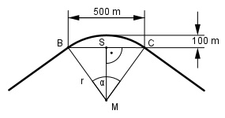

Aufgabe 123 Die Bahnstrecke hat die Form eines Kreisbogens. Wie groß ist der davon überstrichene Winkel α?

Im Dreieck MCS: SC = 500/2 m = 250 m Satz von Pythagoras: r2 = 2502 + (r – 100)2 r2 = 62 500 + r2 - 200r + 10 000 | -r2 0 = 72 500 – 200r | +200r 200r = 72 500 | :200 72500 r = -------- = 362,5 m 200 250 m sin α/2 = ---------- = 0,6897 --> α/2 = 43,6° 362,5 m α = 2 * 43,6° = 87,2°